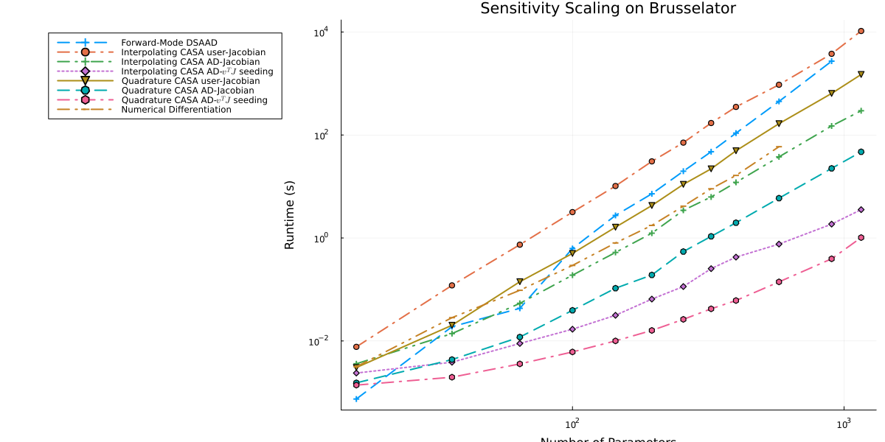
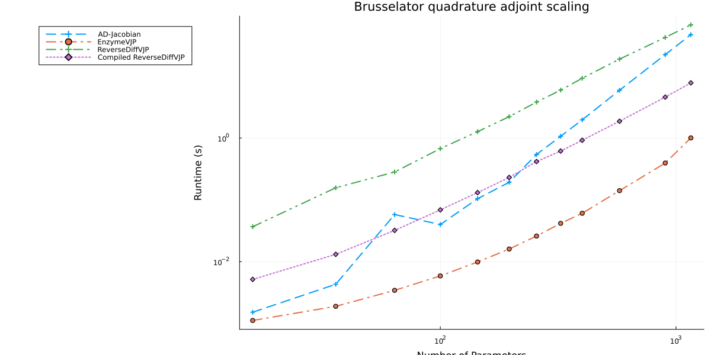

Bruss Scaling PDE Differentaition Benchmarks
From the paper A Comparison of Automatic Differentiation and Continuous Sensitivity Analysis for Derivatives of Differential Equation Solutions
using OrdinaryDiffEq, ReverseDiff, ForwardDiff, FiniteDiff, SciMLSensitivity
using LinearAlgebra, Tracker, Plotsfunction makebrusselator(N=8)
xyd_brusselator = range(0,stop=1,length=N)
function limit(a, N)
if a == N+1
return 1
elseif a == 0
return N
else
return a
end
end
brusselator_f(x, y, t) = ifelse((((x-0.3)^2 + (y-0.6)^2) <= 0.1^2) &&
(t >= 1.1), 5., 0.)
brusselator_2d_loop = let N=N, xyd=xyd_brusselator, dx=step(xyd_brusselator)
function brusselator_2d_loop(du, u, p, t)
@inbounds begin
ii1 = N^2
ii2 = ii1+N^2
ii3 = ii2+2(N^2)
A = @view p[1:ii1]
B = @view p[ii1+1:ii2]
α = @view p[ii2+1:ii3]
II = LinearIndices((N, N, 2))
for I in CartesianIndices((N, N))
x = xyd[I[1]]
y = xyd[I[2]]
i = I[1]
j = I[2]
ip1 = limit(i+1, N); im1 = limit(i-1, N)
jp1 = limit(j+1, N); jm1 = limit(j-1, N)
du[II[i,j,1]] = α[II[i,j,1]]*(u[II[im1,j,1]] + u[II[ip1,j,1]] + u[II[i,jp1,1]] + u[II[i,jm1,1]] - 4u[II[i,j,1]])/dx^2 +
B[II[i,j,1]] + u[II[i,j,1]]^2*u[II[i,j,2]] - (A[II[i,j,1]] + 1)*u[II[i,j,1]] + brusselator_f(x, y, t)
end
for I in CartesianIndices((N, N))
i = I[1]
j = I[2]
ip1 = limit(i+1, N)
im1 = limit(i-1, N)
jp1 = limit(j+1, N)
jm1 = limit(j-1, N)
du[II[i,j,2]] = α[II[i,j,2]]*(u[II[im1,j,2]] + u[II[ip1,j,2]] + u[II[i,jp1,2]] + u[II[i,jm1,2]] - 4u[II[i,j,2]])/dx^2 +
A[II[i,j,1]]*u[II[i,j,1]] - u[II[i,j,1]]^2*u[II[i,j,2]]
end
return nothing
end
end
end
function init_brusselator_2d(xyd)
N = length(xyd)
u = zeros(N, N, 2)
for I in CartesianIndices((N, N))
x = xyd[I[1]]
y = xyd[I[2]]
u[I,1] = 22*(y*(1-y))^(3/2)
u[I,2] = 27*(x*(1-x))^(3/2)
end
vec(u)
end
dx = step(xyd_brusselator)
e1 = ones(N-1)
off = N-1
e4 = ones(N-off)
T = diagm(0=>-2ones(N), -1=>e1, 1=>e1, off=>e4, -off=>e4) ./ dx^2
Ie = Matrix{Float64}(I, N, N)
# A + df/du
Op = kron(Ie, T) + kron(T, Ie)
brusselator_jac = let N=N
(J,a,p,t) -> begin
ii1 = N^2
ii2 = ii1+N^2
ii3 = ii2+2(N^2)
A = @view p[1:ii1]
B = @view p[ii1+1:ii2]
α = @view p[ii2+1:ii3]
u = @view a[1:end÷2]
v = @view a[end÷2+1:end]
N2 = length(a)÷2
α1 = @view α[1:end÷2]
α2 = @view α[end÷2+1:end]
fill!(J, 0)
J[1:N2, 1:N2] .= α1.*Op
J[N2+1:end, N2+1:end] .= α2.*Op
J1 = @view J[1:N2, 1:N2]
J2 = @view J[N2+1:end, 1:N2]
J3 = @view J[1:N2, N2+1:end]
J4 = @view J[N2+1:end, N2+1:end]
J1[diagind(J1)] .+= @. 2u*v-(A+1)
J2[diagind(J2)] .= @. A-2u*v
J3[diagind(J3)] .= @. u^2
J4[diagind(J4)] .+= @. -u^2
nothing
end
end
Jmat = zeros(2N*N, 2N*N)
dp = zeros(2N*N, 4N*N)
brusselator_comp = let N=N, xyd=xyd_brusselator, dx=step(xyd_brusselator), Jmat=Jmat, dp=dp, brusselator_jac=brusselator_jac
function brusselator_comp(dus, us, p, t)
@inbounds begin
ii1 = N^2
ii2 = ii1+N^2
ii3 = ii2+2(N^2)
@views u, s = us[1:ii2], us[ii2+1:end]
du = @view dus[1:ii2]
ds = @view dus[ii2+1:end]
fill!(dp, 0)
A = @view p[1:ii1]
B = @view p[ii1+1:ii2]
α = @view p[ii2+1:ii3]
dfdα = @view dp[:, ii2+1:ii3]
diagind(dfdα)
for i in 1:ii1
dp[i, ii1+i] = 1
end
II = LinearIndices((N, N, 2))
uu = @view u[1:end÷2]
for i in eachindex(uu)
dp[i, i] = -uu[i]
dp[i+ii1, i] = uu[i]
end
for I in CartesianIndices((N, N))
x = xyd[I[1]]
y = xyd[I[2]]
i = I[1]
j = I[2]
ip1 = limit(i+1, N); im1 = limit(i-1, N)
jp1 = limit(j+1, N); jm1 = limit(j-1, N)
au = dfdα[II[i,j,1],II[i,j,1]] = (u[II[im1,j,1]] + u[II[ip1,j,1]] + u[II[i,jp1,1]] + u[II[i,jm1,1]] - 4u[II[i,j,1]])/dx^2
du[II[i,j,1]] = α[II[i,j,1]]*(au) + B[II[i,j,1]] + u[II[i,j,1]]^2*u[II[i,j,2]] - (A[II[i,j,1]] + 1)*u[II[i,j,1]] + brusselator_f(x, y, t)
end
for I in CartesianIndices((N, N))
i = I[1]
j = I[2]
ip1 = limit(i+1, N)
im1 = limit(i-1, N)
jp1 = limit(j+1, N)
jm1 = limit(j-1, N)
av = dfdα[II[i,j,2],II[i,j,2]] = (u[II[im1,j,2]] + u[II[ip1,j,2]] + u[II[i,jp1,2]] + u[II[i,jm1,2]] - 4u[II[i,j,2]])/dx^2
du[II[i,j,2]] = α[II[i,j,2]]*(av) + A[II[i,j,1]]*u[II[i,j,1]] - u[II[i,j,1]]^2*u[II[i,j,2]]
end
brusselator_jac(Jmat,u,p,t)
BLAS.gemm!('N', 'N', 1., Jmat, reshape(s, 2N*N, 4N*N), 1., dp)
copyto!(ds, vec(dp))
return nothing
end
end
end
u0 = init_brusselator_2d(xyd_brusselator)
p = [fill(3.4,N^2); fill(1.,N^2); fill(10.,2*N^2)]
brusselator_2d_loop, u0, p, brusselator_jac, ODEProblem(brusselator_comp, copy([u0;zeros((N^2*2)*(N^2*4))]), (0.,10.), p)
end
Base.eps(::Type{Tracker.TrackedReal{T}}) where T = eps(T)
Base.vec(v::Adjoint{<:Real, <:AbstractVector}) = vec(v') # bad bad hackSetup AutoDiff
bt = 0:0.1:1
tspan = (0.0, 1.0)
forwarddiffn = vcat(2:10,12,15)
reversediffn = 2:10
numdiffn = vcat(2:10,12)
csan = vcat(2:10,12,15,17)
#csaseedn = 2:10
tols = (abstol=1e-5, reltol=1e-7)
@isdefined(PROBS) || (const PROBS = Dict{Int,Any}())
makebrusselator!(dict, n) = get!(()->makebrusselator(n), dict, n)
_adjoint_methods = ntuple(3) do ii
Alg = (InterpolatingAdjoint, QuadratureAdjoint, BacksolveAdjoint)[ii]
(
user = Alg(autodiff=false,autojacvec=false), # user Jacobian
adjc = Alg(autodiff=true,autojacvec=false), # AD Jacobian
advj = Alg(autodiff=true,autojacvec=EnzymeVJP()), # AD vJ
)
end |> NamedTuple{(:interp, :quad, :backsol)}
@isdefined(ADJOINT_METHODS) || (const ADJOINT_METHODS = mapreduce(collect, vcat, _adjoint_methods))
function auto_sen_l2(f, u0, tspan, p, t, alg=Tsit5(); diffalg=ReverseDiff.gradient, kwargs...)
test_f(p) = begin
prob = ODEProblem{true, SciMLBase.FullSpecialize}(f,convert.(eltype(p),u0),tspan,p)
sol = solve(prob,alg,saveat=t; kwargs...)
sum(sol.u) do x
sum(z->(1-z)^2/2, x)
end
end
diffalg(test_f, p)
end
@inline function diffeq_sen_l2(df, u0, tspan, p, t, alg=Tsit5();
abstol=1e-5, reltol=1e-7, iabstol=abstol, ireltol=reltol,
sensalg=SensitivityAlg(), kwargs...)
prob = ODEProblem{true, SciMLBase.FullSpecialize}(df,u0,tspan,p)
saveat = tspan[1] != t[1] && tspan[end] != t[end] ? vcat(tspan[1],t,tspan[end]) : t
sol = solve(prob, alg, abstol=abstol, reltol=reltol, saveat=saveat; kwargs...)
dg(out,u,p,t,i) = (out.=u.-1.0)
adjoint_sensitivities(sol,alg;t,abstol=abstol,dgdu_discrete = dg,
reltol=reltol,sensealg=sensalg)
enddiffeq_sen_l2 (generic function with 2 methods)AD Choice Benchmarks
forwarddiff = map(forwarddiffn) do n
bfun, b_u0, b_p, brusselator_jac, brusselator_comp = makebrusselator!(PROBS, n)
@elapsed auto_sen_l2(bfun, b_u0, tspan, b_p, bt, (Rodas5()); diffalg=(ForwardDiff.gradient), tols...)
t = @elapsed auto_sen_l2(bfun, b_u0, tspan, b_p, bt, (Rodas5()); diffalg=(ForwardDiff.gradient), tols...)
@show n,t
t
end(n, t) = (2, 0.000605745)
(n, t) = (3, 0.014796097)
(n, t) = (4, 0.03733882)
(n, t) = (5, 0.487774476)
(n, t) = (6, 1.698498914)
(n, t) = (7, 5.519375769)
(n, t) = (8, 15.123942107)
(n, t) = (9, 36.045547905)
(n, t) = (10, 82.512037489)
(n, t) = (12, 343.871438)
(n, t) = (15, 2074.03268935)
11-element Vector{Float64}:
0.000605745
0.014796097
0.03733882
0.487774476
1.698498914
5.519375769
15.123942107
36.045547905
82.512037489
343.871438
2074.03268935#=
reversediff = map(reversediffn) do n
bfun, b_u0, b_p, brusselator_jac, brusselator_comp = makebrusselator!(PROBS, n)
@elapsed auto_sen_l2(bfun, b_u0, tspan, b_p, bt, (Rodas5(autodiff=false)); diffalg=(ReverseDiff.gradient), tols...)
t = @elapsed auto_sen_l2(bfun, b_u0, tspan, b_p, bt, (Rodas5(autodiff=false)); diffalg=(ReverseDiff.gradient), tols...)
@show n,t
t
end
=#numdiff = map(numdiffn) do n
bfun, b_u0, b_p, brusselator_jac, brusselator_comp = makebrusselator!(PROBS, n)
@elapsed auto_sen_l2(bfun, b_u0, tspan, b_p, bt, (Rodas5()); diffalg=(FiniteDiff.finite_difference_gradient), tols...)
t = @elapsed auto_sen_l2(bfun, b_u0, tspan, b_p, bt, (Rodas5()); diffalg=(FiniteDiff.finite_difference_gradient), tols...)
@show n,t
t
end(n, t) = (2, 0.002512419)
(n, t) = (3, 0.021100084)
(n, t) = (4, 0.072478297)
(n, t) = (5, 0.218328993)
(n, t) = (6, 0.617284213)
(n, t) = (7, 1.302164065)
(n, t) = (8, 3.096970979)
(n, t) = (9, 6.707177558)
(n, t) = (10, 12.409663268)
(n, t) = (12, 44.347276605)
10-element Vector{Float64}:
0.002512419
0.021100084
0.072478297
0.218328993
0.617284213
1.302164065
3.096970979
6.707177558
12.409663268
44.347276605csa = map(csan) do n
bfun, b_u0, b_p, brusselator_jac, brusselator_comp = makebrusselator!(PROBS, n)
@time ts = map(ADJOINT_METHODS[1:2end÷3]) do alg
@info "Running $alg"
f = SciMLSensitivity.alg_autodiff(alg) ? bfun : ODEFunction(bfun, jac=brusselator_jac)
solver = Rodas5(autodiff=false)
@time diffeq_sen_l2(bfun, b_u0, tspan, b_p, bt, solver; sensalg=alg, tols...)
t = @elapsed diffeq_sen_l2(bfun, b_u0, tspan, b_p, bt, solver; sensalg=alg, tols...)
return t
end
@show n,ts
ts
end11.828634 seconds (23.12 M allocations: 1.450 GiB, 4.31% gc time, 99.91% c
ompilation time)
7.527796 seconds (9.78 M allocations: 629.345 MiB, 2.81% gc time, 99.92%
compilation time)
16.089553 seconds (17.86 M allocations: 1.170 GiB, 1.40% gc time, 99.97% c
ompilation time)
10.481355 seconds (16.81 M allocations: 1.065 GiB, 2.56% gc time, 99.94% c
ompilation time)
5.620708 seconds (6.63 M allocations: 425.761 MiB, 1.95% gc time, 99.92%
compilation time)
6.165383 seconds (9.98 M allocations: 651.114 MiB, 2.11% gc time, 99.92%
compilation time)
58.371669 seconds (84.82 M allocations: 5.395 GiB, 2.49% gc time, 99.89% c
ompilation time: <1% of which was recompilation)
(n, ts) = (2, [0.005816522, 0.002601468, 0.001617486, 0.002334831, 0.001180
84, 0.001079151])
0.077703 seconds (62.26 k allocations: 5.428 MiB)
10.255748 seconds (4.93 M allocations: 315.926 MiB, 0.72% gc time, 99.87%
compilation time)
0.003163 seconds (1.33 k allocations: 335.484 KiB)
0.015247 seconds (10.37 k allocations: 526.766 KiB)
5.248183 seconds (3.19 M allocations: 200.404 MiB, 1.35% gc time, 99.87%
compilation time)
0.001707 seconds (2.00 k allocations: 324.484 KiB)
15.716267 seconds (8.29 M allocations: 531.105 MiB, 0.92% gc time, 98.52%
compilation time)
(n, ts) = (3, [0.077276227, 0.010402983, 0.002891906, 0.015060335, 0.003289
122, 0.001472378])
0.607047 seconds (171.07 k allocations: 14.870 MiB)
10.233592 seconds (4.77 M allocations: 304.921 MiB, 0.67% gc time, 99.58%
compilation time)
0.006896 seconds (1.34 k allocations: 644.125 KiB)
0.105617 seconds (25.35 k allocations: 1.129 MiB)
6.075298 seconds (3.19 M allocations: 200.694 MiB, 1.01% gc time, 99.79%
compilation time)
0.002898 seconds (2.01 k allocations: 476.203 KiB)
17.807363 seconds (8.39 M allocations: 542.431 MiB, 0.73% gc time, 91.27%
compilation time)
(n, ts) = (4, [0.606423665, 0.039743169, 0.006583195, 0.107748803, 0.008908
696, 0.002663588])
2.165855 seconds (258.31 k allocations: 22.838 MiB)
10.396200 seconds (3.94 M allocations: 250.943 MiB, 0.69% gc time, 98.61%
compilation time)
0.012793 seconds (1.37 k allocations: 1.187 MiB)
0.391471 seconds (39.99 k allocations: 1.873 MiB)
5.745284 seconds (3.18 M allocations: 200.882 MiB, 1.04% gc time, 99.41%
compilation time)
0.004601 seconds (2.02 k allocations: 713.219 KiB)
21.441014 seconds (7.77 M allocations: 509.199 MiB, 0.61% gc time, 74.45%
compilation time)
(n, ts) = (5, [2.141706501, 0.140417442, 0.012548665, 0.391482284, 0.029332
036, 0.004408394])
9.230963 seconds (550.87 k allocations: 48.491 MiB)
12.616219 seconds (3.88 M allocations: 248.039 MiB, 0.72% gc time, 96.89%
compilation time)
0.023771 seconds (1.38 k allocations: 2.126 MiB)
1.309479 seconds (63.10 k allocations: 3.091 MiB, 3.76% gc time)
6.754240 seconds (3.19 M allocations: 201.775 MiB, 98.80% compilation tim
e)
0.007701 seconds (2.02 k allocations: 1005.625 KiB)
40.966478 seconds (8.36 M allocations: 565.947 MiB, 0.34% gc time, 46.13%
compilation time)
(n, ts) = (6, [9.25530481, 0.389668368, 0.023635854, 1.265786199, 0.0771454
18, 0.007405279])
20.215646 seconds (645.69 k allocations: 58.354 MiB, 0.40% gc time)
11.289115 seconds (2.80 M allocations: 178.913 MiB, 0.54% gc time, 91.75%
compilation time)
0.049097 seconds (1.38 k allocations: 3.629 MiB)
3.774915 seconds (101.24 k allocations: 4.883 MiB)
1.357584 seconds (486.44 k allocations: 33.273 MiB, 89.58% compilation ti
me)
0.012531 seconds (2.02 k allocations: 1.348 MiB)
61.753035 seconds (4.87 M allocations: 358.921 MiB, 0.23% gc time, 18.74%
compilation time)
(n, ts) = (7, [20.155237616, 0.918402579, 0.048593445, 3.773421949, 0.14043
9161, 0.012290628])
47.466503 seconds (900.95 k allocations: 82.711 MiB)
2.246022 seconds (87.09 k allocations: 11.261 MiB)
0.085317 seconds (1.38 k allocations: 5.840 MiB)
7.987621 seconds (124.44 k allocations: 6.799 MiB)
0.404794 seconds (15.28 k allocations: 4.193 MiB)
0.020128 seconds (2.02 k allocations: 1.853 MiB)
116.421056 seconds (2.26 M allocations: 225.530 MiB, 0.10% gc time)
(n, ts) = (8, [47.456177588, 2.361466556, 0.085256411, 7.876864529, 0.40426
8488, 0.019959254])
111.805856 seconds (1.32 M allocations: 122.362 MiB)
5.320206 seconds (129.01 k allocations: 17.277 MiB)
0.163465 seconds (1.38 k allocations: 9.038 MiB)
18.493775 seconds (181.83 k allocations: 10.563 MiB)
0.798177 seconds (18.54 k allocations: 6.093 MiB)
0.032114 seconds (2.02 k allocations: 2.484 MiB)
273.469608 seconds (3.32 M allocations: 335.847 MiB, 0.04% gc time)
(n, ts) = (9, [111.985207968, 5.347575766, 0.163295913, 18.522934964, 0.797
471708, 0.031476348])
185.162966 seconds (1.43 M allocations: 137.566 MiB, 0.04% gc time)
8.891653 seconds (138.58 k allocations: 23.825 MiB)
0.387643 seconds (1.39 k allocations: 13.525 MiB)
36.519488 seconds (234.78 k allocations: 14.327 MiB)
1.467314 seconds (22.19 k allocations: 8.639 MiB)
0.046504 seconds (2.02 k allocations: 3.280 MiB)
465.105733 seconds (3.67 M allocations: 402.536 MiB, 0.03% gc time)
(n, ts) = (10, [185.395724865, 8.919799886, 0.404668382, 36.383572964, 1.47
1131005, 0.045807879])
742.885150 seconds (2.81 M allocations: 271.145 MiB, 0.01% gc time)
28.297841 seconds (204.72 k allocations: 45.189 MiB)
0.729472 seconds (1.39 k allocations: 27.085 MiB)
100.782117 seconds (315.80 k allocations: 23.681 MiB)
4.451409 seconds (30.64 k allocations: 16.156 MiB, 0.97% gc time)
0.105749 seconds (2.02 k allocations: 5.388 MiB)
1754.261129 seconds (6.73 M allocations: 777.501 MiB, 0.01% gc time)
(n, ts) = (12, [742.590305919, 28.3461076, 0.726532747, 100.813913813, 4.41
5854878, 0.105617524])
3271.765203 seconds (5.14 M allocations: 516.645 MiB, 0.01% gc time)
112.115448 seconds (328.37 k allocations: 102.016 MiB)
1.425276 seconds (1.40 k allocations: 64.528 MiB)
453.899193 seconds (586.28 k allocations: 50.502 MiB)
16.691968 seconds (46.19 k allocations: 36.239 MiB)
0.297061 seconds (2.02 k allocations: 10.569 MiB)
7711.097461 seconds (12.20 M allocations: 1.525 GiB, 0.01% gc time)
(n, ts) = (15, [3270.37645987, 112.145893327, 1.451290646, 453.919355691, 1
6.701106146, 0.297006513])
7809.399597 seconds (7.45 M allocations: 766.079 MiB, 0.00% gc time)
221.424253 seconds (392.62 k allocations: 161.462 MiB)
3.015478 seconds (1.41 k allocations: 105.404 MiB, 1.00% gc time)
1115.981269 seconds (872.20 k allocations: 80.006 MiB, 0.00% gc time)
35.199664 seconds (58.48 k allocations: 57.750 MiB)
0.796832 seconds (2.03 k allocations: 15.774 MiB)
18378.311604 seconds (17.55 M allocations: 2.318 GiB, 0.01% gc time)
(n, ts) = (17, [7818.142931825, 221.246854434, 3.174848184, 1113.815247312,
35.224678708, 0.877141509])
12-element Vector{Vector{Float64}}:
[0.005816522, 0.002601468, 0.001617486, 0.002334831, 0.00118084, 0.0010791
51]
[0.077276227, 0.010402983, 0.002891906, 0.015060335, 0.003289122, 0.001472
378]
[0.606423665, 0.039743169, 0.006583195, 0.107748803, 0.008908696, 0.002663
588]
[2.141706501, 0.140417442, 0.012548665, 0.391482284, 0.029332036, 0.004408
394]
[9.25530481, 0.389668368, 0.023635854, 1.265786199, 0.077145418, 0.0074052
79]
[20.155237616, 0.918402579, 0.048593445, 3.773421949, 0.140439161, 0.01229
0628]
[47.456177588, 2.361466556, 0.085256411, 7.876864529, 0.404268488, 0.01995
9254]
[111.985207968, 5.347575766, 0.163295913, 18.522934964, 0.797471708, 0.031
476348]
[185.395724865, 8.919799886, 0.404668382, 36.383572964, 1.471131005, 0.045
807879]
[742.590305919, 28.3461076, 0.726532747, 100.813913813, 4.415854878, 0.105
617524]
[3270.37645987, 112.145893327, 1.451290646, 453.919355691, 16.701106146, 0
.297006513]
[7818.142931825, 221.246854434, 3.174848184, 1113.815247312, 35.224678708,
0.877141509]n_to_param(n) = 4n^2
lw = 2
ms = 0.5
plt1 = plot(title="Sensitivity Scaling on Brusselator");
plot!(plt1, n_to_param.(forwarddiffn), forwarddiff, lab="Forward-Mode DSAAD", lw=lw, marksize=ms, linestyle=:auto, marker=:auto);
#plot!(plt1, n_to_param.(reversediffn), reversediff, lab="Reverse-Mode DSAAD", lw=lw, marksize=ms, linestyle=:auto, marker=:auto);
csadata = [[csa[j][i] for j in eachindex(csa)] for i in eachindex(csa[1])]
plot!(plt1, n_to_param.(csan), csadata[1], lab="Interpolating CASA user-Jacobian", lw=lw, marksize=ms, linestyle=:auto, marker=:auto);
plot!(plt1, n_to_param.(csan), csadata[2], lab="Interpolating CASA AD-Jacobian", lw=lw, marksize=ms, linestyle=:auto, marker=:auto);
plot!(plt1, n_to_param.(csan), csadata[3], lab=raw"Interpolating CASA AD-$v^{T}J$ seeding", lw=lw, marksize=ms, linestyle=:auto, marker=:auto);
plot!(plt1, n_to_param.(csan), csadata[1+3], lab="Quadrature CASA user-Jacobian", lw=lw, marksize=ms, linestyle=:auto, marker=:auto);
plot!(plt1, n_to_param.(csan), csadata[2+3], lab="Quadrature CASA AD-Jacobian", lw=lw, marksize=ms, linestyle=:auto, marker=:auto);
plot!(plt1, n_to_param.(csan), csadata[3+3], lab=raw"Quadrature CASA AD-$v^{T}J$ seeding", lw=lw, marksize=ms, linestyle=:auto, marker=:auto);
plot!(plt1, n_to_param.(numdiffn), numdiff, lab="Numerical Differentiation", lw=lw, marksize=ms, linestyle=:auto, marker=:auto);
xaxis!(plt1, "Number of Parameters", :log10);
yaxis!(plt1, "Runtime (s)", :log10);
plot!(plt1, legend=:outertopleft, size=(1200, 600))
VJP Choice Benchmarks
bt = 0:0.1:1
tspan = (0.0, 1.0)
csan = vcat(2:10,12,15,17)
tols = (abstol=1e-5, reltol=1e-7)
_adjoint_methods = ntuple(2) do ii
Alg = (InterpolatingAdjoint, QuadratureAdjoint)[ii]
(
advj1 = Alg(autodiff=true,autojacvec=EnzymeVJP()), # AD vJ
advj2 = Alg(autodiff=true,autojacvec=ReverseDiffVJP(false)), # AD vJ
advj3 = Alg(autodiff=true,autojacvec=ReverseDiffVJP(true)), # AD vJ
)
end |> NamedTuple{(:interp, :quad)}
adjoint_methods = mapreduce(collect, vcat, _adjoint_methods)
csavjp = map(csan) do n
bfun, b_u0, b_p, brusselator_jac, brusselator_comp = makebrusselator!(PROBS, n)
@time ts = map(adjoint_methods) do alg
@info "Running $alg"
f = SciMLSensitivity.alg_autodiff(alg) ? bfun : ODEFunction(bfun, jac=brusselator_jac)
solver = Rodas5(autodiff=false)
@time diffeq_sen_l2(bfun, b_u0, tspan, b_p, bt, solver; sensalg=alg, tols...)
t = @elapsed diffeq_sen_l2(bfun, b_u0, tspan, b_p, bt, solver; sensalg=alg, tols...)
return t
end
@show n,ts
ts
end0.001679 seconds (1.27 k allocations: 190.828 KiB)
5.657211 seconds (9.71 M allocations: 611.105 MiB, 1.34% gc time, 99.11%
compilation time)
4.859083 seconds (7.24 M allocations: 465.902 MiB, 2.12% gc time, 99.78%
compilation time)
0.001149 seconds (2.02 k allocations: 216.688 KiB)
4.835834 seconds (7.38 M allocations: 465.790 MiB, 2.49% gc time, 99.39%
compilation time)
4.847898 seconds (7.02 M allocations: 450.195 MiB, 1.68% gc time, 99.85%
compilation time)
20.657915 seconds (32.61 M allocations: 2.007 GiB, 1.84% gc time, 99.07% c
ompilation time)
(n, ts) = (2, [0.001319059, 0.046136611, 0.005704001, 0.000860092, 0.026404
348, 0.003983857])
0.003126 seconds (1.33 k allocations: 335.484 KiB)
0.171432 seconds (2.09 M allocations: 95.600 MiB, 20.27% gc time)
0.016508 seconds (5.41 k allocations: 549.000 KiB)
0.001581 seconds (2.00 k allocations: 324.484 KiB)
0.109729 seconds (1.10 M allocations: 50.154 MiB, 28.55% gc time)
0.009993 seconds (7.24 k allocations: 600.453 KiB)
0.559395 seconds (6.41 M allocations: 295.262 MiB, 11.81% gc time)
(n, ts) = (3, [0.002867576, 0.134989573, 0.016230154, 0.001430068, 0.077897
644, 0.009823997])
0.006557 seconds (1.34 k allocations: 644.125 KiB)
0.421283 seconds (6.23 M allocations: 268.498 MiB, 3.74% gc time)
0.047077 seconds (8.54 k allocations: 1017.906 KiB)
0.002964 seconds (2.01 k allocations: 476.203 KiB)
0.215743 seconds (2.94 M allocations: 126.581 MiB, 7.42% gc time)
0.024165 seconds (11.63 k allocations: 957.094 KiB)
1.438794 seconds (18.39 M allocations: 796.423 MiB, 5.00% gc time)
(n, ts) = (4, [0.006334096, 0.438745263, 0.046836296, 0.002587338, 0.199113
922, 0.023978978])
0.012781 seconds (1.37 k allocations: 1.187 MiB)
0.984591 seconds (14.51 M allocations: 666.822 MiB, 6.24% gc time)
0.107952 seconds (12.50 k allocations: 1.762 MiB)
0.004622 seconds (2.02 k allocations: 713.219 KiB)
0.453984 seconds (6.63 M allocations: 304.667 MiB, 3.41% gc time)
0.051816 seconds (17.30 k allocations: 1.453 MiB)
3.252210 seconds (42.35 M allocations: 1.908 GiB, 5.20% gc time)
(n, ts) = (5, [0.012547584, 0.986688116, 0.107415465, 0.004407772, 0.470437
266, 0.051695454])
0.023745 seconds (1.38 k allocations: 2.126 MiB)
1.970609 seconds (29.30 M allocations: 1.260 GiB, 5.80% gc time)
0.234890 seconds (17.32 k allocations: 2.941 MiB, 6.67% gc time)
0.007613 seconds (2.02 k allocations: 1005.625 KiB)
0.884696 seconds (12.88 M allocations: 567.154 MiB, 5.32% gc time)
0.100436 seconds (24.17 k allocations: 2.051 MiB)
6.433709 seconds (84.44 M allocations: 3.643 GiB, 5.15% gc time)
(n, ts) = (6, [0.023471052, 1.959169373, 0.227525673, 0.007386658, 0.891528
928, 0.098680559])
0.048615 seconds (1.38 k allocations: 3.629 MiB)
3.718895 seconds (55.53 M allocations: 2.326 GiB, 5.38% gc time)
0.426631 seconds (23.32 k allocations: 4.747 MiB)
0.012268 seconds (2.02 k allocations: 1.348 MiB)
1.568245 seconds (22.90 M allocations: 981.691 MiB, 5.00% gc time)
0.175597 seconds (32.28 k allocations: 2.785 MiB)
11.923661 seconds (156.98 M allocations: 6.593 GiB, 4.88% gc time)
(n, ts) = (7, [0.048460002, 3.723380377, 0.425352126, 0.01198872, 1.5831093
2, 0.175901178])
0.084558 seconds (1.38 k allocations: 5.840 MiB)
6.307127 seconds (93.69 M allocations: 4.182 GiB, 5.61% gc time)
0.724702 seconds (29.97 k allocations: 7.322 MiB)
0.020880 seconds (2.02 k allocations: 1.853 MiB)
2.687216 seconds (39.29 M allocations: 1.753 GiB, 5.81% gc time)
0.303823 seconds (41.80 k allocations: 3.789 MiB)
20.228121 seconds (266.11 M allocations: 11.907 GiB, 4.90% gc time)
(n, ts) = (8, [0.084107981, 6.290785064, 0.725719376, 0.019680714, 2.671953
287, 0.303140376])
0.161626 seconds (1.38 k allocations: 9.038 MiB)
12.154631 seconds (181.84 M allocations: 7.891 GiB, 5.30% gc time)
1.425269 seconds (40.48 k allocations: 11.079 MiB)
0.031781 seconds (2.02 k allocations: 2.484 MiB)
4.177621 seconds (61.70 M allocations: 2.677 GiB, 5.46% gc time)
0.463388 seconds (52.44 k allocations: 4.905 MiB)
36.789744 seconds (487.28 M allocations: 21.190 GiB, 4.62% gc time)
(n, ts) = (9, [0.162776529, 12.148013204, 1.418588967, 0.031339216, 4.14816
1609, 0.461524751])
0.309133 seconds (1.39 k allocations: 13.525 MiB, 5.18% gc time)
15.625475 seconds (233.92 M allocations: 9.952 GiB, 5.12% gc time)
2.051911 seconds (46.53 k allocations: 15.842 MiB)
0.047666 seconds (2.02 k allocations: 3.280 MiB)
6.327493 seconds (92.71 M allocations: 3.942 GiB, 5.50% gc time)
0.693229 seconds (64.33 k allocations: 6.243 MiB)
50.379392 seconds (653.49 M allocations: 27.864 GiB, 4.71% gc time)
(n, ts) = (10, [0.35834758, 15.84221728, 2.074059875, 0.04626308, 6.2996788
01, 0.69674035])
0.641579 seconds (1.39 k allocations: 27.085 MiB, 4.60% gc time)
33.882706 seconds (498.79 M allocations: 22.283 GiB, 5.73% gc time)
4.080408 seconds (67.17 k allocations: 30.513 MiB)
0.108356 seconds (2.02 k allocations: 5.388 MiB)
13.005137 seconds (188.66 M allocations: 8.423 GiB, 5.84% gc time)
1.444707 seconds (91.88 k allocations: 9.739 MiB)
106.997767 seconds (1.38 G allocations: 61.554 GiB, 5.38% gc time)
(n, ts) = (12, [0.643105641, 34.529033035, 4.111129034, 0.10680491, 13.0131
40764, 1.421993399])
1.424650 seconds (1.40 k allocations: 64.528 MiB)
90.518167 seconds (1.25 G allocations: 53.273 GiB, 8.02% gc time)
10.416404 seconds (105.39 k allocations: 69.894 MiB)
0.298468 seconds (2.02 k allocations: 10.569 MiB)
33.355753 seconds (453.40 M allocations: 19.275 GiB, 5.82% gc time)
3.465182 seconds (142.59 k allocations: 17.231 MiB, 0.95% gc time)
281.175299 seconds (3.41 G allocations: 145.412 GiB, 6.97% gc time)
(n, ts) = (15, [1.410332628, 92.429388121, 10.677497896, 0.297304718, 33.12
0416196, 3.741863277])
3.100593 seconds (1.41 k allocations: 105.404 MiB)
130.615639 seconds (1.92 G allocations: 80.231 GiB, 6.98% gc time)
16.581214 seconds (131.41 k allocations: 112.046 MiB)
0.734977 seconds (2.03 k allocations: 15.774 MiB)
52.303867 seconds (743.36 M allocations: 30.973 GiB, 6.55% gc time)
5.983849 seconds (182.65 k allocations: 24.263 MiB)
420.327917 seconds (5.34 G allocations: 222.910 GiB, 5.71% gc time)
(n, ts) = (17, [2.871060384, 132.385516519, 16.304786059, 0.819397529, 52.5
24216983, 6.090285222])
12-element Vector{Vector{Float64}}:
[0.001319059, 0.046136611, 0.005704001, 0.000860092, 0.026404348, 0.003983
857]
[0.002867576, 0.134989573, 0.016230154, 0.001430068, 0.077897644, 0.009823
997]
[0.006334096, 0.438745263, 0.046836296, 0.002587338, 0.199113922, 0.023978
978]
[0.012547584, 0.986688116, 0.107415465, 0.004407772, 0.470437266, 0.051695
454]
[0.023471052, 1.959169373, 0.227525673, 0.007386658, 0.891528928, 0.098680
559]
[0.048460002, 3.723380377, 0.425352126, 0.01198872, 1.58310932, 0.17590117
8]
[0.084107981, 6.290785064, 0.725719376, 0.019680714, 2.671953287, 0.303140
376]
[0.162776529, 12.148013204, 1.418588967, 0.031339216, 4.148161609, 0.46152
4751]
[0.35834758, 15.84221728, 2.074059875, 0.04626308, 6.299678801, 0.69674035
]
[0.643105641, 34.529033035, 4.111129034, 0.10680491, 13.013140764, 1.42199
3399]
[1.410332628, 92.429388121, 10.677497896, 0.297304718, 33.120416196, 3.741
863277]
[2.871060384, 132.385516519, 16.304786059, 0.819397529, 52.524216983, 6.09
0285222]plt2 = plot(title="Brusselator quadrature adjoint scaling");
csacompare = [[csavjp[j][i] for j in eachindex(csavjp)] for i in eachindex(csavjp[1])]
plot!(plt2, n_to_param.(csan), csadata[2+3], lab="AD-Jacobian", lw=lw, marksize=ms, linestyle=:auto, marker=:auto);
plot!(plt2, n_to_param.(csan), csacompare[1+3], lab=raw"EnzymeVJP", lw=lw, marksize=ms, linestyle=:auto, marker=:auto);
plot!(plt2, n_to_param.(csan), csacompare[2+3], lab=raw"ReverseDiffVJP", lw=lw, marksize=ms, linestyle=:auto, marker=:auto);
plot!(plt2, n_to_param.(csan), csacompare[3+3], lab=raw"Compiled ReverseDiffVJP", lw=lw, marksize=ms, linestyle=:auto, marker=:auto);
xaxis!(plt2, "Number of Parameters", :log10);
yaxis!(plt2, "Runtime (s)", :log10);
plot!(plt2, legend=:outertopleft, size=(1200, 600))
Appendix
Appendix
These benchmarks are a part of the SciMLBenchmarks.jl repository, found at: https://github.com/SciML/SciMLBenchmarks.jl. For more information on high-performance scientific machine learning, check out the SciML Open Source Software Organization https://sciml.ai.
To locally run this benchmark, do the following commands:
using SciMLBenchmarks
SciMLBenchmarks.weave_file("benchmarks/AutomaticDifferentiation","BrussScaling.jmd")Computer Information:
Julia Version 1.10.9
Commit 5595d20a287 (2025-03-10 12:51 UTC)
Build Info:
Official https://julialang.org/ release
Platform Info:
OS: Linux (x86_64-linux-gnu)
CPU: 128 × AMD EPYC 7502 32-Core Processor
WORD_SIZE: 64
LIBM: libopenlibm
LLVM: libLLVM-15.0.7 (ORCJIT, znver2)
Threads: 1 default, 0 interactive, 1 GC (on 128 virtual cores)
Environment:
JULIA_CPU_THREADS = 128
JULIA_DEPOT_PATH = /cache/julia-buildkite-plugin/depots/5b300254-1738-4989-ae0a-f4d2d937f953
Package Information:
Status `/cache/build/exclusive-amdci1-0/julialang/scimlbenchmarks-dot-jl/benchmarks/AutomaticDifferentiation/Project.toml`
⌃ [6e4b80f9] BenchmarkTools v1.5.0
⌃ [a93c6f00] DataFrames v1.6.1
⌃ [1313f7d8] DataFramesMeta v0.15.3
⌅ [a0c0ee7d] DifferentiationInterface v0.5.9
⌃ [a82114a7] DifferentiationInterfaceTest v0.5.0
⌅ [7da242da] Enzyme v0.12.25
⌃ [6a86dc24] FiniteDiff v2.23.1
⌅ [f6369f11] ForwardDiff v0.10.36
⌃ [1dea7af3] OrdinaryDiffEq v6.86.0
⌃ [65888b18] ParameterizedFunctions v5.17.0
⌃ [91a5bcdd] Plots v1.40.5
⌃ [08abe8d2] PrettyTables v2.3.2
⌃ [37e2e3b7] ReverseDiff v1.15.3
[31c91b34] SciMLBenchmarks v0.1.3
⌃ [1ed8b502] SciMLSensitivity v7.64.0
⌃ [90137ffa] StaticArrays v1.9.7
⌃ [07d77754] Tapir v0.2.26
⌃ [9f7883ad] Tracker v0.2.34
⌅ [e88e6eb3] Zygote v0.6.70
[37e2e46d] LinearAlgebra
[d6f4376e] Markdown
[de0858da] Printf
[8dfed614] Test
Info Packages marked with ⌃ and ⌅ have new versions available. Those with ⌃ may be upgradable, but those with ⌅ are restricted by compatibility constraints from upgrading. To see why use `status --outdated`
Warning The project dependencies or compat requirements have changed since the manifest was last resolved. It is recommended to `Pkg.resolve()` or consider `Pkg.update()` if necessary.And the full manifest:
Status `/cache/build/exclusive-amdci1-0/julialang/scimlbenchmarks-dot-jl/benchmarks/AutomaticDifferentiation/Manifest.toml`
⌃ [47edcb42] ADTypes v1.6.1
[621f4979] AbstractFFTs v1.5.0
[1520ce14] AbstractTrees v0.4.5
⌃ [7d9f7c33] Accessors v0.1.37
⌃ [79e6a3ab] Adapt v4.0.4
[66dad0bd] AliasTables v1.1.3
[ec485272] ArnoldiMethod v0.4.0
⌃ [4fba245c] ArrayInterface v7.12.0
⌃ [4c555306] ArrayLayouts v1.10.2
⌅ [a9b6321e] Atomix v0.1.0
⌃ [6e4b80f9] BenchmarkTools v1.5.0
⌅ [e2ed5e7c] Bijections v0.1.7
[d1d4a3ce] BitFlags v0.1.9
[62783981] BitTwiddlingConvenienceFunctions v0.1.6
[fa961155] CEnum v0.5.0
[2a0fbf3d] CPUSummary v0.2.6
[00ebfdb7] CSTParser v3.4.3
⌃ [49dc2e85] Calculus v0.5.1
⌃ [7057c7e9] Cassette v0.3.13
[8be319e6] Chain v0.6.0
⌃ [082447d4] ChainRules v1.69.0
⌃ [d360d2e6] ChainRulesCore v1.24.0
⌃ [0ca39b1e] Chairmarks v1.2.1
[fb6a15b2] CloseOpenIntervals v0.1.13
⌃ [da1fd8a2] CodeTracking v1.3.5
⌃ [944b1d66] CodecZlib v0.7.5
⌃ [35d6a980] ColorSchemes v3.26.0
⌅ [3da002f7] ColorTypes v0.11.5
⌅ [c3611d14] ColorVectorSpace v0.10.0
⌅ [5ae59095] Colors v0.12.11
⌃ [861a8166] Combinatorics v1.0.2
⌅ [a80b9123] CommonMark v0.8.12
[38540f10] CommonSolve v0.2.4
⌃ [bbf7d656] CommonSubexpressions v0.3.0
[f70d9fcc] CommonWorldInvalidations v1.0.0
⌃ [34da2185] Compat v4.15.0
⌃ [b0b7db55] ComponentArrays v0.15.14
[b152e2b5] CompositeTypes v0.1.4
[a33af91c] CompositionsBase v0.1.2
[2569d6c7] ConcreteStructs v0.2.3
⌃ [f0e56b4a] ConcurrentUtilities v2.4.2
[8f4d0f93] Conda v1.10.2
⌅ [187b0558] ConstructionBase v1.5.6
[d38c429a] Contour v0.6.3
[adafc99b] CpuId v0.3.1
[a8cc5b0e] Crayons v4.1.1
[9a962f9c] DataAPI v1.16.0
⌃ [a93c6f00] DataFrames v1.6.1
⌃ [1313f7d8] DataFramesMeta v0.15.3
⌃ [864edb3b] DataStructures v0.18.20
[e2d170a0] DataValueInterfaces v1.0.0
[8bb1440f] DelimitedFiles v1.9.1
⌃ [2b5f629d] DiffEqBase v6.151.5
⌅ [459566f4] DiffEqCallbacks v3.6.2
⌃ [77a26b50] DiffEqNoiseProcess v5.22.0
[163ba53b] DiffResults v1.1.0
[b552c78f] DiffRules v1.15.1
[de460e47] DiffTests v0.1.2
⌅ [a0c0ee7d] DifferentiationInterface v0.5.9
⌃ [a82114a7] DifferentiationInterfaceTest v0.5.0
⌃ [b4f34e82] Distances v0.10.11
⌃ [31c24e10] Distributions v0.25.109
⌃ [ffbed154] DocStringExtensions v0.9.3
⌃ [5b8099bc] DomainSets v0.7.14
⌃ [fa6b7ba4] DualNumbers v0.6.8
⌅ [7c1d4256] DynamicPolynomials v0.5.7
⌅ [06fc5a27] DynamicQuantities v0.13.2
[da5c29d0] EllipsisNotation v1.8.0
⌃ [4e289a0a] EnumX v1.0.4
⌅ [7da242da] Enzyme v0.12.25
⌅ [f151be2c] EnzymeCore v0.7.7
⌃ [460bff9d] ExceptionUnwrapping v0.1.10
⌃ [d4d017d3] ExponentialUtilities v1.26.1
[e2ba6199] ExprTools v0.1.10
⌃ [c87230d0] FFMPEG v0.4.1
⌃ [7034ab61] FastBroadcast v0.3.4
[9aa1b823] FastClosures v0.3.2
[29a986be] FastLapackInterface v2.0.4
⌃ [1a297f60] FillArrays v1.11.0
⌃ [64ca27bc] FindFirstFunctions v1.2.0
⌃ [6a86dc24] FiniteDiff v2.23.1
[53c48c17] FixedPointNumbers v0.8.5
[1fa38f19] Format v1.3.7
⌅ [f6369f11] ForwardDiff v0.10.36
[f62d2435] FunctionProperties v0.1.2
[069b7b12] FunctionWrappers v1.1.3
[77dc65aa] FunctionWrappersWrappers v0.1.3
⌅ [d9f16b24] Functors v0.4.11
⌅ [0c68f7d7] GPUArrays v10.3.0
⌅ [46192b85] GPUArraysCore v0.1.6
⌅ [61eb1bfa] GPUCompiler v0.26.7
⌃ [28b8d3ca] GR v0.73.7
⌃ [c145ed77] GenericSchur v0.5.4
⌃ [d7ba0133] Git v1.3.1
[c27321d9] Glob v1.3.1
⌃ [86223c79] Graphs v1.11.2
[42e2da0e] Grisu v1.0.2
⌃ [cd3eb016] HTTP v1.10.8
[eafb193a] Highlights v0.5.3
[3e5b6fbb] HostCPUFeatures v0.1.17
⌃ [34004b35] HypergeometricFunctions v0.3.23
⌃ [7073ff75] IJulia v1.25.0
[7869d1d1] IRTools v0.4.14
[615f187c] IfElse v0.1.1
[d25df0c9] Inflate v0.1.5
⌃ [842dd82b] InlineStrings v1.4.2
⌃ [8197267c] IntervalSets v0.7.10
⌃ [3587e190] InverseFunctions v0.1.15
⌃ [41ab1584] InvertedIndices v1.3.0
⌃ [92d709cd] IrrationalConstants v0.2.2
[82899510] IteratorInterfaceExtensions v1.0.0
⌅ [c3a54625] JET v0.9.6
⌅ [27aeb0d3] JLArrays v0.1.5
⌃ [1019f520] JLFzf v0.1.7
⌃ [692b3bcd] JLLWrappers v1.5.0
[682c06a0] JSON v0.21.4
⌅ [98e50ef6] JuliaFormatter v1.0.58
⌅ [aa1ae85d] JuliaInterpreter v0.9.32
⌃ [ccbc3e58] JumpProcesses v9.11.1
[ef3ab10e] KLU v0.6.0
⌃ [63c18a36] KernelAbstractions v0.9.22
⌅ [ba0b0d4f] Krylov v0.9.6
⌅ [929cbde3] LLVM v8.0.0
⌃ [b964fa9f] LaTeXStrings v1.3.1
⌃ [2ee39098] LabelledArrays v1.16.0
⌅ [984bce1d] LambertW v0.4.6
⌃ [23fbe1c1] Latexify v0.16.4
[10f19ff3] LayoutPointers v0.1.17
⌃ [5078a376] LazyArrays v2.1.9
[2d8b4e74] LevyArea v1.0.0
⌃ [d3d80556] LineSearches v7.2.0
⌅ [7ed4a6bd] LinearSolve v2.30.2
⌃ [2ab3a3ac] LogExpFunctions v0.3.28
⌃ [e6f89c97] LoggingExtras v1.0.3
⌃ [bdcacae8] LoopVectorization v0.12.171
⌅ [6f1432cf] LoweredCodeUtils v2.4.8
[d8e11817] MLStyle v0.4.17
⌃ [1914dd2f] MacroTools v0.5.13
[d125e4d3] ManualMemory v0.1.8
⌃ [bb5d69b7] MaybeInplace v0.1.3
[739be429] MbedTLS v1.1.9
[442fdcdd] Measures v0.3.2
[e1d29d7a] Missings v1.2.0
⌅ [dbe65cb8] MistyClosures v1.0.1
⌅ [961ee093] ModelingToolkit v9.26.0
[46d2c3a1] MuladdMacro v0.2.4
⌃ [102ac46a] MultivariatePolynomials v0.5.6
⌃ [ffc61752] Mustache v1.0.19
⌃ [d8a4904e] MutableArithmetics v1.4.5
⌃ [d41bc354] NLSolversBase v7.8.3
[2774e3e8] NLsolve v4.5.1
⌃ [872c559c] NNlib v0.9.21
⌃ [77ba4419] NaNMath v1.0.2
⌅ [8913a72c] NonlinearSolve v3.13.1
⌃ [d8793406] ObjectFile v0.4.1
⌃ [6fe1bfb0] OffsetArrays v1.14.1
⌃ [4d8831e6] OpenSSL v1.4.3
⌃ [429524aa] Optim v1.9.4
⌅ [3bd65402] Optimisers v0.3.3
⌃ [bac558e1] OrderedCollections v1.6.3
⌃ [1dea7af3] OrdinaryDiffEq v6.86.0
⌃ [90014a1f] PDMats v0.11.31
[65ce6f38] PackageExtensionCompat v1.0.2
⌃ [65888b18] ParameterizedFunctions v5.17.0
[d96e819e] Parameters v0.12.3
⌃ [69de0a69] Parsers v2.8.1
[b98c9c47] Pipe v1.3.0
⌃ [ccf2f8ad] PlotThemes v3.2.0
⌃ [995b91a9] PlotUtils v1.4.1
⌃ [91a5bcdd] Plots v1.40.5
[e409e4f3] PoissonRandom v0.4.4
⌃ [f517fe37] Polyester v0.7.15
[1d0040c9] PolyesterWeave v0.2.2
[2dfb63ee] PooledArrays v1.4.3
[85a6dd25] PositiveFactorizations v0.2.4
⌃ [d236fae5] PreallocationTools v0.4.22
⌅ [aea7be01] PrecompileTools v1.2.1
[21216c6a] Preferences v1.4.3
⌃ [08abe8d2] PrettyTables v2.3.2
⌃ [92933f4c] ProgressMeter v1.10.2
⌃ [43287f4e] PtrArrays v1.2.0
⌃ [1fd47b50] QuadGK v2.9.4
⌃ [74087812] Random123 v1.7.0
⌃ [e6cf234a] RandomNumbers v1.5.3
[c1ae055f] RealDot v0.1.0
[3cdcf5f2] RecipesBase v1.3.4
[01d81517] RecipesPipeline v0.6.12
⌃ [731186ca] RecursiveArrayTools v3.26.0
[f2c3362d] RecursiveFactorization v0.2.23
[189a3867] Reexport v1.2.2
[05181044] RelocatableFolders v1.0.1
⌃ [ae029012] Requires v1.3.0
[ae5879a3] ResettableStacks v1.1.1
⌃ [37e2e3b7] ReverseDiff v1.15.3
⌅ [79098fc4] Rmath v0.7.1
⌃ [7e49a35a] RuntimeGeneratedFunctions v0.5.13
[94e857df] SIMDTypes v0.1.0
[476501e8] SLEEFPirates v0.6.43
⌃ [0bca4576] SciMLBase v2.44.0
[31c91b34] SciMLBenchmarks v0.1.3
⌅ [c0aeaf25] SciMLOperators v0.3.8
⌃ [1ed8b502] SciMLSensitivity v7.64.0
⌃ [53ae85a6] SciMLStructures v1.4.1
[6c6a2e73] Scratch v1.2.1
⌃ [91c51154] SentinelArrays v1.4.5
⌃ [efcf1570] Setfield v1.1.1
[992d4aef] Showoff v1.0.3
⌃ [777ac1f9] SimpleBufferStream v1.1.0
⌅ [727e6d20] SimpleNonlinearSolve v1.11.0
[699a6c99] SimpleTraits v0.9.4
[ce78b400] SimpleUnPack v1.1.0
[b85f4697] SoftGlobalScope v1.1.0
[a2af1166] SortingAlgorithms v1.2.1
⌃ [47a9eef4] SparseDiffTools v2.19.0
[dc90abb0] SparseInverseSubset v0.1.2
⌅ [0a514795] SparseMatrixColorings v0.3.5
⌃ [e56a9233] Sparspak v0.3.9
⌃ [276daf66] SpecialFunctions v2.4.0
⌃ [aedffcd0] Static v1.1.1
⌃ [0d7ed370] StaticArrayInterface v1.5.1
⌃ [90137ffa] StaticArrays v1.9.7
[1e83bf80] StaticArraysCore v1.4.3
⌃ [82ae8749] StatsAPI v1.7.0
⌃ [2913bbd2] StatsBase v0.34.3
⌃ [4c63d2b9] StatsFuns v1.3.1
⌃ [789caeaf] StochasticDiffEq v6.66.0
[7792a7ef] StrideArraysCore v0.5.7
[69024149] StringEncodings v0.3.7
⌅ [892a3eda] StringManipulation v0.3.4
⌅ [09ab397b] StructArrays v0.6.18
⌃ [53d494c1] StructIO v0.3.0
⌃ [2efcf032] SymbolicIndexingInterface v0.3.26
⌃ [19f23fe9] SymbolicLimits v0.2.1
⌅ [d1185830] SymbolicUtils v2.1.2
⌅ [0c5d862f] Symbolics v5.34.0
[9ce81f87] TableMetadataTools v0.1.0
[3783bdb8] TableTraits v1.0.1
[bd369af6] Tables v1.12.0
⌃ [07d77754] Tapir v0.2.26
[62fd8b95] TensorCore v0.1.1
⌅ [8ea1fca8] TermInterface v0.4.1
⌃ [8290d209] ThreadingUtilities v0.5.2
⌃ [a759f4b9] TimerOutputs v0.5.24
[0796e94c] Tokenize v0.5.29
⌃ [9f7883ad] Tracker v0.2.34
⌃ [3bb67fe8] TranscodingStreams v0.11.1
[d5829a12] TriangularSolve v0.2.1
⌃ [410a4b4d] Tricks v0.1.8
[781d530d] TruncatedStacktraces v1.4.0
⌃ [5c2747f8] URIs v1.5.1
[3a884ed6] UnPack v1.0.2
[1cfade01] UnicodeFun v0.4.1
⌃ [1986cc42] Unitful v1.21.0
⌃ [45397f5d] UnitfulLatexify v1.6.4
[a7c27f48] Unityper v0.1.6
⌅ [013be700] UnsafeAtomics v0.2.1
⌅ [d80eeb9a] UnsafeAtomicsLLVM v0.1.5
[41fe7b60] Unzip v0.2.0
⌃ [3d5dd08c] VectorizationBase v0.21.70
[81def892] VersionParsing v1.3.0
[19fa3120] VertexSafeGraphs v0.2.0
[44d3d7a6] Weave v0.10.12
⌃ [ddb6d928] YAML v0.4.11
⌃ [c2297ded] ZMQ v1.2.6
⌅ [e88e6eb3] Zygote v0.6.70
⌃ [700de1a5] ZygoteRules v0.2.5
⌃ [6e34b625] Bzip2_jll v1.0.8+1
⌃ [83423d85] Cairo_jll v1.18.0+2
⌅ [7cc45869] Enzyme_jll v0.0.137+0
⌃ [2702e6a9] EpollShim_jll v0.0.20230411+0
⌃ [2e619515] Expat_jll v2.6.2+0
⌅ [b22a6f82] FFMPEG_jll v4.4.4+1
⌃ [a3f928ae] Fontconfig_jll v2.13.96+0
⌃ [d7e528f0] FreeType2_jll v2.13.2+0
⌃ [559328eb] FriBidi_jll v1.0.14+0
⌃ [0656b61e] GLFW_jll v3.4.0+0
⌅ [d2c73de3] GR_jll v0.73.7+0
[78b55507] Gettext_jll v0.21.0+0
⌃ [f8c6e375] Git_jll v2.44.0+2
⌃ [7746bdde] Glib_jll v2.80.2+0
⌃ [3b182d85] Graphite2_jll v1.3.14+0
⌅ [2e76f6c2] HarfBuzz_jll v2.8.1+1
⌅ [1d5cc7b8] IntelOpenMP_jll v2024.2.0+0
⌃ [aacddb02] JpegTurbo_jll v3.0.3+0
[c1c5ebd0] LAME_jll v3.100.2+0
⌅ [88015f11] LERC_jll v3.0.0+1
⌅ [dad2f222] LLVMExtra_jll v0.0.30+0
⌃ [1d63c593] LLVMOpenMP_jll v15.0.7+0
⌃ [dd4b983a] LZO_jll v2.10.2+0
⌅ [e9f186c6] Libffi_jll v3.2.2+1
⌃ [d4300ac3] Libgcrypt_jll v1.8.11+0
⌃ [7e76a0d4] Libglvnd_jll v1.6.0+0
⌃ [7add5ba3] Libgpg_error_jll v1.49.0+0
⌃ [94ce4f54] Libiconv_jll v1.17.0+0
⌃ [4b2f31a3] Libmount_jll v2.40.1+0
⌅ [89763e89] Libtiff_jll v4.5.1+1
⌃ [38a345b3] Libuuid_jll v2.40.1+0
⌃ [856f044c] MKL_jll v2024.2.0+0
[e7412a2a] Ogg_jll v1.3.5+1
⌃ [458c3c95] OpenSSL_jll v3.0.14+0
⌃ [efe28fd5] OpenSpecFun_jll v0.5.5+0
⌃ [91d4177d] Opus_jll v1.3.2+0
⌅ [30392449] Pixman_jll v0.43.4+0
⌅ [c0090381] Qt6Base_jll v6.7.1+1
⌅ [629bc702] Qt6Declarative_jll v6.7.1+2
⌅ [ce943373] Qt6ShaderTools_jll v6.7.1+1
⌃ [e99dba38] Qt6Wayland_jll v6.7.1+1
⌅ [f50d1b31] Rmath_jll v0.4.2+0
[a44049a8] Vulkan_Loader_jll v1.3.243+0
⌃ [a2964d1f] Wayland_jll v1.21.0+1
⌃ [2381bf8a] Wayland_protocols_jll v1.31.0+0
⌅ [02c8fc9c] XML2_jll v2.13.1+0
⌃ [aed1982a] XSLT_jll v1.1.41+0
⌃ [ffd25f8a] XZ_jll v5.4.6+0
⌃ [f67eecfb] Xorg_libICE_jll v1.1.1+0
⌃ [c834827a] Xorg_libSM_jll v1.2.4+0
⌃ [4f6342f7] Xorg_libX11_jll v1.8.6+0
⌃ [0c0b7dd1] Xorg_libXau_jll v1.0.11+0
⌃ [935fb764] Xorg_libXcursor_jll v1.2.0+4
⌃ [a3789734] Xorg_libXdmcp_jll v1.1.4+0
⌃ [1082639a] Xorg_libXext_jll v1.3.6+0
⌃ [d091e8ba] Xorg_libXfixes_jll v5.0.3+4
⌃ [a51aa0fd] Xorg_libXi_jll v1.7.10+4
⌃ [d1454406] Xorg_libXinerama_jll v1.1.4+4
⌃ [ec84b674] Xorg_libXrandr_jll v1.5.2+4
⌃ [ea2f1a96] Xorg_libXrender_jll v0.9.11+0
⌃ [14d82f49] Xorg_libpthread_stubs_jll v0.1.1+0
⌃ [c7cfdc94] Xorg_libxcb_jll v1.17.0+0
⌃ [cc61e674] Xorg_libxkbfile_jll v1.1.2+0
[e920d4aa] Xorg_xcb_util_cursor_jll v0.1.4+0
[12413925] Xorg_xcb_util_image_jll v0.4.0+1
[2def613f] Xorg_xcb_util_jll v0.4.0+1
[975044d2] Xorg_xcb_util_keysyms_jll v0.4.0+1
[0d47668e] Xorg_xcb_util_renderutil_jll v0.3.9+1
[c22f9ab0] Xorg_xcb_util_wm_jll v0.4.1+1
⌃ [35661453] Xorg_xkbcomp_jll v1.4.6+0
⌃ [33bec58e] Xorg_xkeyboard_config_jll v2.39.0+0
⌃ [c5fb5394] Xorg_xtrans_jll v1.5.0+0
⌃ [8f1865be] ZeroMQ_jll v4.3.5+0
⌃ [3161d3a3] Zstd_jll v1.5.6+0
[35ca27e7] eudev_jll v3.2.9+0
⌅ [214eeab7] fzf_jll v0.43.0+0
⌃ [1a1c6b14] gperf_jll v3.1.1+0
⌃ [a4ae2306] libaom_jll v3.9.0+0
⌃ [0ac62f75] libass_jll v0.15.1+0
[2db6ffa8] libevdev_jll v1.11.0+0
⌃ [f638f0a6] libfdk_aac_jll v2.0.2+0
[36db933b] libinput_jll v1.18.0+0
⌃ [b53b4c65] libpng_jll v1.6.43+1
⌃ [a9144af2] libsodium_jll v1.0.20+0
⌃ [f27f6e37] libvorbis_jll v1.3.7+1
[009596ad] mtdev_jll v1.1.6+0
⌃ [1317d2d5] oneTBB_jll v2021.12.0+0
⌅ [1270edf5] x264_jll v2021.5.5+0
⌅ [dfaa095f] x265_jll v3.5.0+0
⌃ [d8fb68d0] xkbcommon_jll v1.4.1+1
[0dad84c5] ArgTools v1.1.1
[56f22d72] Artifacts
[2a0f44e3] Base64
[ade2ca70] Dates
[8ba89e20] Distributed
[f43a241f] Downloads v1.6.0
[7b1f6079] FileWatching
[9fa8497b] Future
[b77e0a4c] InteractiveUtils
[4af54fe1] LazyArtifacts
[b27032c2] LibCURL v0.6.4
[76f85450] LibGit2
[8f399da3] Libdl
[37e2e46d] LinearAlgebra
[56ddb016] Logging
[d6f4376e] Markdown
[a63ad114] Mmap
[ca575930] NetworkOptions v1.2.0
[44cfe95a] Pkg v1.10.0
[de0858da] Printf
[9abbd945] Profile
[3fa0cd96] REPL
[9a3f8284] Random
[ea8e919c] SHA v0.7.0
[9e88b42a] Serialization
[1a1011a3] SharedArrays
[6462fe0b] Sockets
[2f01184e] SparseArrays v1.10.0
[10745b16] Statistics v1.10.0
[4607b0f0] SuiteSparse
[fa267f1f] TOML v1.0.3
[a4e569a6] Tar v1.10.0
[8dfed614] Test
[cf7118a7] UUIDs
[4ec0a83e] Unicode
[e66e0078] CompilerSupportLibraries_jll v1.1.1+0
[deac9b47] LibCURL_jll v8.4.0+0
[e37daf67] LibGit2_jll v1.6.4+0
[29816b5a] LibSSH2_jll v1.11.0+1
[c8ffd9c3] MbedTLS_jll v2.28.2+1
[14a3606d] MozillaCACerts_jll v2023.1.10
[4536629a] OpenBLAS_jll v0.3.23+4
[05823500] OpenLibm_jll v0.8.1+2
[efcefdf7] PCRE2_jll v10.42.0+1
[bea87d4a] SuiteSparse_jll v7.2.1+1
[83775a58] Zlib_jll v1.2.13+1
[8e850b90] libblastrampoline_jll v5.8.0+1
[8e850ede] nghttp2_jll v1.52.0+1
[3f19e933] p7zip_jll v17.4.0+2
Info Packages marked with ⌃ and ⌅ have new versions available. Those with ⌃ may be upgradable, but those with ⌅ are restricted by compatibility constraints from upgrading. To see why use `status --outdated -m`
Warning The project dependencies or compat requirements have changed since the manifest was last resolved. It is recommended to `Pkg.resolve()` or consider `Pkg.update()` if necessary.